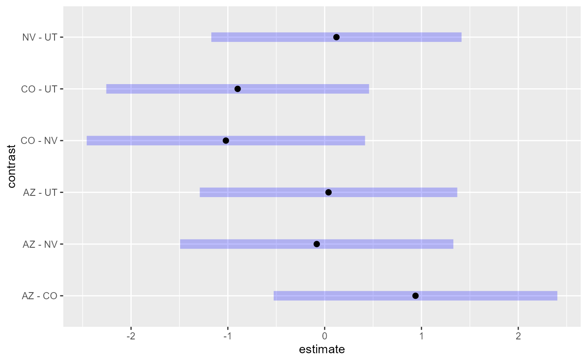

Using emmeans to Estimate Marginal Means of spmodel Objects
Michael Dumelle, Matt Higham, and Jay M. Ver Hoef
Source:vignettes/articles/emmeans.Rmd
emmeans.RmdIntroduction
spmodel is an package used to fit, summarize, and
predict for a variety of spatial statistical models. The vignette
provides an estimating marginal means (i.e., least-squares means) of
spmodel objects using the emmeans.
R package (Lenth 2024).
Before proceeding, we load spmodel and emmeans
by running
If using spmodel in a formal publication or report,
please cite it. Citing spmodel lets us devote more
resources to the package in the future. We view the spmodel
citation by running
citation(package = "spmodel")#> To cite spmodel in publications use:
#>
#> Dumelle M, Higham M, Ver Hoef JM (2023). spmodel: Spatial statistical
#> modeling and prediction in R. PLOS ONE 18(3): e0282524.
#> https://doi.org/10.1371/journal.pone.0282524
#>
#> A BibTeX entry for LaTeX users is
#>
#> @Article{,
#> title = {{spmodel}: Spatial statistical modeling and prediction in {R}},
#> author = {Michael Dumelle and Matt Higham and Jay M. {Ver Hoef}},
#> journal = {PLOS ONE},
#> year = {2023},
#> volume = {18},
#> number = {3},
#> pages = {1--32},
#> doi = {10.1371/journal.pone.0282524},
#> url = {https://doi.org/10.1371/journal.pone.0282524},
#> }Applying emmeans to spmodel Objects
In this section, we use the point-referenced lake data,
an sf object that contains data on lake conductivty for
some southwestern states (Arizona, Colorado, Nevada, Utah) in the United
States. We view the first few rows of lake by running
lake#> Simple feature collection with 102 features and 8 fields
#> Geometry type: POINT
#> Dimension: XY
#> Bounding box: xmin: -2004016 ymin: 1031593 xmax: -753669.4 ymax: 2338804
#> Projected CRS: NAD83 / Conus Albers
#> # A tibble: 102 × 9
#> comid log_cond state temp precip elev origin year
#> * <chr> <dbl> <chr> <dbl> <dbl> <dbl> <chr> <fct>
#> 1 20451100 6.32 AZ 12.7 4.94 1567 HUMAN_MADE 2012
#> 2 20476542 7.02 AZ 21.8 5.78 459 HUMAN_MADE 2012
#> 3 10001770 7.13 AZ 23.2 0.912 69.1 HUMAN_MADE 2012
#> 4 20584396 6.17 AZ 11.2 4.44 1822 HUMAN_MADE 2012
#> 5 20524727 5.48 AZ 8.31 6.12 2168 HUMAN_MADE 2012
#> 6 20479908 7.00 AZ 22.4 2.31 366. HUMAN_MADE 2012
#> 7 10001834 7.85 AZ 23.5 0.989 57.7 NATURAL 2012
#> 8 20695686 4.77 AZ 9.13 5.91 2072. HUMAN_MADE 2012
#> 9 21327603 5.30 AZ 17.9 2.83 1006. HUMAN_MADE 2012
#> 10 20449310 4.33 AZ 9.79 6.14 1998. HUMAN_MADE 2012
#> # ℹ 92 more rows
#> # ℹ 1 more variable: geometry <POINT [m]>We can learn more about lake by running
help("lake", "spmodel"), and we can visualize the
distribution of log conductivity in lake by state and year
by running
ggplot(lake, aes(color = log_cond)) +
geom_sf() +
scale_color_viridis_c() +
theme_gray(base_size = 14)Distribution of log conductivity in the lake data.
A Single-Factor Model
First we explore a single-factor model that characterizes the response variable, log conductivity, by each state (AZ, CO, NV, UT). We fit and summarize this model by running:
spmod1 <- splm(
formula = log_cond ~ state,
data = lake,
spcov_type = "exponential"
)
summary(spmod1)#>
#> Call:
#> splm(formula = log_cond ~ state, data = lake, spcov_type = "exponential")
#>
#> Residuals:
#> Min 1Q Median 3Q Max
#> -3.1268 -0.9543 0.0707 0.8315 3.2323
#>
#> Coefficients (fixed):
#> Estimate Std. Error z value Pr(>|z|)
#> (Intercept) 5.81994 0.39616 14.691 <2e-16 ***
#> stateCO -0.93855 0.57028 -1.646 0.0998 .
#> stateNV 0.08179 0.54934 0.149 0.8817
#> stateUT -0.03993 0.51767 -0.077 0.9385
#> ---
#> Signif. codes: 0 '***' 0.001 '**' 0.01 '*' 0.05 '.' 0.1 ' ' 1
#>
#> Pseudo R-squared: 0.04172
#>
#> Coefficients (exponential spatial covariance):
#> de ie range
#> 1.631e+00 3.658e-03 3.727e+04The summary() output provides mean estimates for each
state relative to the difference from a reference group (here,
AZ). Often, however, the question “What is the mean in each group?” is
of interest, and this is not straightforward to obtain from
summary(). Fortunately, emmeans makes this
information readily available via the emmeans function:
em11 <- emmeans(spmod1, ~ state)which, when printed, returns the mean estimates, standard errors, and confidence intervals for each factor level:
em11#> state emmean SE df asymp.LCL asymp.UCL
#> AZ 5.82 0.396 Inf 5.04 6.60
#> CO 4.88 0.410 Inf 4.08 5.69
#> NV 5.90 0.381 Inf 5.16 6.65
#> UT 5.78 0.333 Inf 5.13 6.43
#>
#> Degrees-of-freedom method: asymptotic
#> Confidence level used: 0.95The emmeans object em11 is an
emmGrid object, but it can easily be converted into a data
frame using data.frame() or
tibble::as_tibble():
data.frame(em11)#> state emmean SE df asymp.LCL asymp.UCL
#> 1 AZ 5.819938 0.3961566 Inf 5.043485 6.596390
#> 2 CO 4.881391 0.4102283 Inf 4.077359 5.685424
#> 3 NV 5.901723 0.3806448 Inf 5.155673 6.647773
#> 4 UT 5.780011 0.3333187 Inf 5.126718 6.433303We then visualize the means and confidence intervals:
plot(em11)Recall that summary() provides mean estimates for each
state relative to the difference from a reference group (i.e.,
contrasts with a reference group). Contrasts between mean estimates that
are not reference groups, however, is again not straightforward to
obtain from summary(). Fortunately, pairs()
provides a simple solution, creating contrasts for comparisons of each
factor level to all other factor levels that are easily visualized:
pairs(em11)#> contrast estimate SE df z.ratio p.value
#> AZ - CO 0.9385 0.570 Inf 1.646 0.3529
#> AZ - NV -0.0818 0.549 Inf -0.149 0.9988
#> AZ - UT 0.0399 0.518 Inf 0.077 0.9998
#> CO - NV -1.0203 0.560 Inf -1.823 0.2623
#> CO - UT -0.8986 0.528 Inf -1.701 0.3231
#> NV - UT 0.1217 0.503 Inf 0.242 0.9950
#>
#> Degrees-of-freedom method: asymptotic
#> P value adjustment: tukey method for comparing a family of 4 estimates
By default, the p-values and confidence intervals from the output and
plot above are adjusted according to the Tukey method. The model
suggests no significant evidence (p-values > 0.1) that the average
log conductivity is different among the states. Other p-value adjustment
methods can be passed via adjust. For example, we can use
the Bonferroni method instead of Tukey method
pairs(em11, adjust = "bonferroni")#> contrast estimate SE df z.ratio p.value
#> AZ - CO 0.9385 0.570 Inf 1.646 0.5989
#> AZ - NV -0.0818 0.549 Inf -0.149 1.0000
#> AZ - UT 0.0399 0.518 Inf 0.077 1.0000
#> CO - NV -1.0203 0.560 Inf -1.823 0.4096
#> CO - UT -0.8986 0.528 Inf -1.701 0.5337
#> NV - UT 0.1217 0.503 Inf 0.242 1.0000
#>
#> Degrees-of-freedom method: asymptotic
#> P value adjustment: bonferroni method for 6 testsor apply no adjustment method at all:
pairs(em11, adjust = "none")#> contrast estimate SE df z.ratio p.value
#> AZ - CO 0.9385 0.570 Inf 1.646 0.0998
#> AZ - NV -0.0818 0.549 Inf -0.149 0.8817
#> AZ - UT 0.0399 0.518 Inf 0.077 0.9385
#> CO - NV -1.0203 0.560 Inf -1.823 0.0683
#> CO - UT -0.8986 0.528 Inf -1.701 0.0890
#> NV - UT 0.1217 0.503 Inf 0.242 0.8088
#>
#> Degrees-of-freedom method: asymptoticA Multi-Factor Model
Now we explore a model that adds a second factor: year,
with two levels, 2012 and 2017:
spmod2 <- splm(
formula = log_cond ~ state + year,
data = lake,
spcov_type = "exponential"
)We can view the factors separately:
em21 <- emmeans(spmod2, ~ state)
em21#> state emmean SE df asymp.LCL asymp.UCL
#> AZ 5.78 0.424 Inf 4.95 6.61
#> CO 4.86 0.442 Inf 4.00 5.73
#> NV 5.88 0.404 Inf 5.08 6.67
#> UT 5.70 0.377 Inf 4.96 6.44
#>
#> Results are averaged over the levels of: year
#> Degrees-of-freedom method: asymptotic
#> Confidence level used: 0.95
em22 <- emmeans(spmod2, ~ year)
em22#> year emmean SE df asymp.LCL asymp.UCL
#> 2012 5.67 0.213 Inf 5.26 6.09
#> 2017 5.44 0.265 Inf 4.92 5.96
#>
#> Results are averaged over the levels of: state
#> Degrees-of-freedom method: asymptotic
#> Confidence level used: 0.95Or, we can view the factors simultaneously (by providing both
variables separated by +):
em23 <- emmeans(spmod2, ~ state + year)
em23#> state year emmean SE df asymp.LCL asymp.UCL
#> AZ 2012 5.90 0.426 Inf 5.06 6.73
#> CO 2012 4.98 0.449 Inf 4.10 5.86
#> NV 2012 5.99 0.409 Inf 5.19 6.80
#> UT 2012 5.82 0.364 Inf 5.11 6.53
#> AZ 2017 5.66 0.452 Inf 4.78 6.55
#> CO 2017 4.74 0.463 Inf 3.84 5.65
#> NV 2017 5.76 0.430 Inf 4.91 6.60
#> UT 2017 5.58 0.422 Inf 4.76 6.41
#>
#> Degrees-of-freedom method: asymptotic
#> Confidence level used: 0.95
plot(em23)A Multi-Factor Model With an Interaction
We can supplement the model with an interaction, which lets the
effect of state to vary by year. Recall that shorthand for
state + year + state:year is state * year:
spmod3 <- splm(
formula = log_cond ~ state * year,
data = lake,
spcov_type = "exponential"
)Because the effect of state varies by year, single-variable summaries
of emmeans can be misleading, which emmeans
warns users about:
emmeans(spmod3, ~ state)#> NOTE: Results may be misleading due to involvement in interactions#> state emmean SE df asymp.LCL asymp.UCL
#> AZ 5.70 0.435 Inf 4.85 6.56
#> CO 4.88 0.440 Inf 4.02 5.74
#> NV 5.82 0.412 Inf 5.02 6.63
#> UT 5.76 0.398 Inf 4.98 6.54
#>
#> Results are averaged over the levels of: year
#> Degrees-of-freedom method: asymptotic
#> Confidence level used: 0.95Instead, it is helpful to quantify the effect of state separately for each year:
em31 <- emmeans(spmod2, ~ state, by = "year")
em31#> year = 2012:
#> state emmean SE df asymp.LCL asymp.UCL
#> AZ 5.90 0.426 Inf 5.06 6.73
#> CO 4.98 0.449 Inf 4.10 5.86
#> NV 5.99 0.409 Inf 5.19 6.80
#> UT 5.82 0.364 Inf 5.11 6.53
#>
#> year = 2017:
#> state emmean SE df asymp.LCL asymp.UCL
#> AZ 5.66 0.452 Inf 4.78 6.55
#> CO 4.74 0.463 Inf 3.84 5.65
#> NV 5.76 0.430 Inf 4.91 6.60
#> UT 5.58 0.422 Inf 4.76 6.41
#>
#> Degrees-of-freedom method: asymptotic
#> Confidence level used: 0.95
pairs(em31)#> year = 2012:
#> contrast estimate SE df z.ratio p.value
#> AZ - CO 0.9161 0.610 Inf 1.501 0.4366
#> AZ - NV -0.0958 0.582 Inf -0.164 0.9984
#> AZ - UT 0.0788 0.559 Inf 0.141 0.9990
#> CO - NV -1.0118 0.597 Inf -1.696 0.3259
#> CO - UT -0.8373 0.575 Inf -1.456 0.4645
#> NV - UT 0.1745 0.540 Inf 0.323 0.9884
#>
#> year = 2017:
#> contrast estimate SE df z.ratio p.value
#> AZ - CO 0.9161 0.610 Inf 1.501 0.4366
#> AZ - NV -0.0958 0.582 Inf -0.164 0.9984
#> AZ - UT 0.0788 0.559 Inf 0.141 0.9990
#> CO - NV -1.0118 0.597 Inf -1.696 0.3259
#> CO - UT -0.8373 0.575 Inf -1.456 0.4645
#> NV - UT 0.1745 0.540 Inf 0.323 0.9884
#>
#> Degrees-of-freedom method: asymptotic
#> P value adjustment: tukey method for comparing a family of 4 estimates
plot(em31)And similarly, we can quantify the effect of year separately for each state
#> state = AZ:
#> contrast estimate SE df z.ratio p.value
#> year2012 - year2017 0.237 0.227 Inf 1.047 0.2952
#>
#> state = CO:
#> contrast estimate SE df z.ratio p.value
#> year2012 - year2017 0.237 0.227 Inf 1.047 0.2952
#>
#> state = NV:
#> contrast estimate SE df z.ratio p.value
#> year2012 - year2017 0.237 0.227 Inf 1.047 0.2952
#>
#> state = UT:
#> contrast estimate SE df z.ratio p.value
#> year2012 - year2017 0.237 0.227 Inf 1.047 0.2952
#>
#> Degrees-of-freedom method: asymptoticAnd we can quantify the effect of each combination of
state and year:
em33 <- emmeans(spmod2, ~ state + year)
em33#> state year emmean SE df asymp.LCL asymp.UCL
#> AZ 2012 5.90 0.426 Inf 5.06 6.73
#> CO 2012 4.98 0.449 Inf 4.10 5.86
#> NV 2012 5.99 0.409 Inf 5.19 6.80
#> UT 2012 5.82 0.364 Inf 5.11 6.53
#> AZ 2017 5.66 0.452 Inf 4.78 6.55
#> CO 2017 4.74 0.463 Inf 3.84 5.65
#> NV 2017 5.76 0.430 Inf 4.91 6.60
#> UT 2017 5.58 0.422 Inf 4.76 6.41
#>
#> Degrees-of-freedom method: asymptotic
#> Confidence level used: 0.95
pairs(em33)#> contrast estimate SE df z.ratio p.value
#> AZ year2012 - CO year2012 0.9161 0.610 Inf 1.501 0.8071
#> AZ year2012 - NV year2012 -0.0958 0.582 Inf -0.164 1.0000
#> AZ year2012 - UT year2012 0.0788 0.559 Inf 0.141 1.0000
#> AZ year2012 - AZ year2017 0.2372 0.227 Inf 1.047 0.9672
#> AZ year2012 - CO year2017 1.1533 0.644 Inf 1.791 0.6261
#> AZ year2012 - NV year2017 0.1414 0.621 Inf 0.228 1.0000
#> AZ year2012 - UT year2017 0.3159 0.622 Inf 0.508 0.9996
#> CO year2012 - NV year2012 -1.0118 0.597 Inf -1.696 0.6902
#> CO year2012 - UT year2012 -0.8373 0.575 Inf -1.456 0.8308
#> CO year2012 - AZ year2017 -0.6789 0.658 Inf -1.032 0.9697
#> CO year2012 - CO year2017 0.2372 0.227 Inf 1.047 0.9672
#> CO year2012 - NV year2017 -0.7746 0.642 Inf -1.207 0.9302
#> CO year2012 - UT year2017 -0.6001 0.644 Inf -0.932 0.9830
#> NV year2012 - UT year2012 0.1745 0.540 Inf 0.323 1.0000
#> NV year2012 - AZ year2017 0.3329 0.628 Inf 0.530 0.9995
#> NV year2012 - CO year2017 1.2490 0.635 Inf 1.968 0.5037
#> NV year2012 - NV year2017 0.2372 0.227 Inf 1.047 0.9672
#> NV year2012 - UT year2017 0.4117 0.609 Inf 0.676 0.9976
#> UT year2012 - AZ year2017 0.1584 0.583 Inf 0.272 1.0000
#> UT year2012 - CO year2017 1.0745 0.591 Inf 1.817 0.6081
#> UT year2012 - NV year2017 0.0627 0.562 Inf 0.112 1.0000
#> UT year2012 - UT year2017 0.2372 0.227 Inf 1.047 0.9672
#> AZ year2017 - CO year2017 0.9161 0.610 Inf 1.501 0.8071
#> AZ year2017 - NV year2017 -0.0958 0.582 Inf -0.164 1.0000
#> AZ year2017 - UT year2017 0.0788 0.559 Inf 0.141 1.0000
#> CO year2017 - NV year2017 -1.0118 0.597 Inf -1.696 0.6902
#> CO year2017 - UT year2017 -0.8373 0.575 Inf -1.456 0.8308
#> NV year2017 - UT year2017 0.1745 0.540 Inf 0.323 1.0000
#>
#> Degrees-of-freedom method: asymptotic
#> P value adjustment: tukey method for comparing a family of 8 estimatesA Single-Factor Numeric Model With an Interaction
Suppose it is of interest to supplement the state model
(spmod1) with a continuous temperature variable:
spmod4 <- splm(
formula = log_cond ~ state * temp,
data = lake,
spcov_type = "exponential"
)Because our model has a state-by-year interaction, the effect of
temperature varies by state. Supplying the by argument lets
us quantify the effect of state at the average temperature value:
em41 <- emmeans(spmod4, ~ state, by = "temp")
em41#> temp = 7.63:
#> state emmean SE df asymp.LCL asymp.UCL
#> AZ 4.67 0.305 Inf 4.07 5.26
#> CO 5.70 0.212 Inf 5.29 6.12
#> NV 5.64 0.204 Inf 5.25 6.04
#> UT 6.05 0.144 Inf 5.77 6.33
#>
#> Degrees-of-freedom method: asymptotic
#> Confidence level used: 0.95
pairs(em41)#> temp = 7.63:
#> contrast estimate SE df z.ratio p.value
#> AZ - CO -1.0362 0.371 Inf -2.790 0.0270
#> AZ - NV -0.9786 0.367 Inf -2.668 0.0382
#> AZ - UT -1.3826 0.337 Inf -4.099 0.0002
#> CO - NV 0.0576 0.294 Inf 0.196 0.9973
#> CO - UT -0.3465 0.256 Inf -1.353 0.5289
#> NV - UT -0.4040 0.249 Inf -1.621 0.3668
#>
#> Degrees-of-freedom method: asymptotic
#> P value adjustment: tukey method for comparing a family of 4 estimatesIf we want to quantify the effect of state at specific temperature
values, we can supply them via the at argument:
#> temp = 2:
#> contrast estimate SE df z.ratio p.value
#> AZ - CO -0.3838 0.508 Inf -0.756 0.8742
#> AZ - NV -0.8791 0.593 Inf -1.483 0.4477
#> AZ - UT -0.4548 0.499 Inf -0.911 0.7987
#> CO - NV -0.4953 0.437 Inf -1.135 0.6680
#> CO - UT -0.0709 0.297 Inf -0.239 0.9952
#> NV - UT 0.4244 0.426 Inf 0.996 0.7518
#>
#> temp = 8:
#> contrast estimate SE df z.ratio p.value
#> AZ - CO -1.0785 0.369 Inf -2.920 0.0184
#> AZ - NV -0.9850 0.358 Inf -2.753 0.0301
#> AZ - UT -1.4428 0.332 Inf -4.346 0.0001
#> CO - NV 0.0934 0.298 Inf 0.313 0.9893
#> CO - UT -0.3643 0.267 Inf -1.367 0.5204
#> NV - UT -0.4577 0.250 Inf -1.828 0.2599
#>
#> Degrees-of-freedom method: asymptotic
#> P value adjustment: tukey method for comparing a family of 4 estimatesWe use emmip() to visualize the change in the effect of
state at varying temperature values:
And emtrends to quantify the effect of temperature
separately for each state:
em43 <- emtrends(spmod4, ~ state, var = "temp")
em43#> state temp.trend SE df asymp.LCL asymp.UCL
#> AZ 0.159 0.0319 Inf 0.0962 0.221
#> CO 0.274 0.0429 Inf 0.1905 0.358
#> NV 0.176 0.0492 Inf 0.0798 0.273
#> UT 0.323 0.0367 Inf 0.2514 0.395
#>
#> Degrees-of-freedom method: asymptotic
#> Confidence level used: 0.95A Multi-Factor Numeric Model With Interactions
We can extend the single-factor numeric model to include multiple factors:
spmod5 <- splm(log_cond ~ state * year * temp, data = lake, spcov_type = "exponential")
em51 <- emmeans(spmod5, ~ state, by = c("temp", "year"))
em51#> temp = 7.63, year = 2012:
#> state emmean SE df asymp.LCL asymp.UCL
#> AZ 4.93 0.339 Inf 4.26 5.59
#> CO 5.71 0.243 Inf 5.23 6.18
#> NV 5.76 0.250 Inf 5.27 6.25
#> UT 6.06 0.144 Inf 5.78 6.34
#>
#> temp = 7.63, year = 2017:
#> state emmean SE df asymp.LCL asymp.UCL
#> AZ 3.71 0.647 Inf 2.45 4.98
#> CO 5.69 0.312 Inf 5.08 6.30
#> NV 5.39 0.352 Inf 4.70 6.08
#> UT 6.17 1.452 Inf 3.33 9.02
#>
#> Degrees-of-freedom method: asymptotic
#> Confidence level used: 0.95#> temp = 7.63, state = AZ:
#> year emmean SE df asymp.LCL asymp.UCL
#> 2012 4.93 0.339 Inf 4.26 5.59
#> 2017 3.71 0.647 Inf 2.45 4.98
#>
#> temp = 7.63, state = CO:
#> year emmean SE df asymp.LCL asymp.UCL
#> 2012 5.71 0.243 Inf 5.23 6.18
#> 2017 5.69 0.312 Inf 5.08 6.30
#>
#> temp = 7.63, state = NV:
#> year emmean SE df asymp.LCL asymp.UCL
#> 2012 5.76 0.250 Inf 5.27 6.25
#> 2017 5.39 0.352 Inf 4.70 6.08
#>
#> temp = 7.63, state = UT:
#> year emmean SE df asymp.LCL asymp.UCL
#> 2012 6.06 0.144 Inf 5.78 6.34
#> 2017 6.17 1.452 Inf 3.33 9.02
#>
#> Degrees-of-freedom method: asymptotic
#> Confidence level used: 0.95#> temp = 7.63:
#> contrast estimate SE df z.ratio p.value
#> AZ year2012 - CO year2012 -0.7793 0.417 Inf -1.868 0.5729
#> AZ year2012 - NV year2012 -0.8351 0.421 Inf -1.983 0.4936
#> AZ year2012 - UT year2012 -1.1323 0.369 Inf -3.072 0.0443
#> AZ year2012 - AZ year2017 1.2122 0.716 Inf 1.694 0.6915
#> AZ year2012 - CO year2017 -0.7639 0.461 Inf -1.658 0.7147
#> AZ year2012 - NV year2017 -0.4664 0.489 Inf -0.954 0.9805
#> AZ year2012 - UT year2017 -1.2457 1.491 Inf -0.835 0.9911
#> CO year2012 - NV year2012 -0.0557 0.348 Inf -0.160 1.0000
#> CO year2012 - UT year2012 -0.3529 0.283 Inf -1.249 0.9170
#> CO year2012 - AZ year2017 1.9916 0.691 Inf 2.882 0.0762
#> CO year2012 - CO year2017 0.0155 0.367 Inf 0.042 1.0000
#> CO year2012 - NV year2017 0.3130 0.428 Inf 0.732 0.9961
#> CO year2012 - UT year2017 -0.4664 1.472 Inf -0.317 1.0000
#> NV year2012 - UT year2012 -0.2972 0.288 Inf -1.031 0.9699
#> NV year2012 - AZ year2017 2.0473 0.694 Inf 2.952 0.0627
#> NV year2012 - CO year2017 0.0712 0.400 Inf 0.178 1.0000
#> NV year2012 - NV year2017 0.3687 0.420 Inf 0.878 0.9880
#> NV year2012 - UT year2017 -0.4107 1.473 Inf -0.279 1.0000
#> UT year2012 - AZ year2017 2.3445 0.663 Inf 3.537 0.0096
#> UT year2012 - CO year2017 0.3684 0.344 Inf 1.072 0.9626
#> UT year2012 - NV year2017 0.6659 0.380 Inf 1.751 0.6535
#> UT year2012 - UT year2017 -0.1134 1.455 Inf -0.078 1.0000
#> AZ year2017 - CO year2017 -1.9761 0.718 Inf -2.751 0.1076
#> AZ year2017 - NV year2017 -1.6786 0.736 Inf -2.279 0.3050
#> AZ year2017 - UT year2017 -2.4580 1.590 Inf -1.546 0.7823
#> CO year2017 - NV year2017 0.2975 0.470 Inf 0.633 0.9984
#> CO year2017 - UT year2017 -0.4819 1.485 Inf -0.324 1.0000
#> NV year2017 - UT year2017 -0.7793 1.494 Inf -0.522 0.9996
#>
#> Degrees-of-freedom method: asymptotic
#> P value adjustment: tukey method for comparing a family of 8 estimates
em54 <- emtrends(spmod5, ~ state, by = "year", var = "temp")
em54#> year = 2012:
#> state temp.trend SE df asymp.LCL asymp.UCL
#> AZ 0.145 0.0358 Inf 0.0748 0.215
#> CO 0.269 0.0482 Inf 0.1747 0.364
#> NV 0.168 0.1029 Inf -0.0338 0.369
#> UT 0.325 0.0390 Inf 0.2486 0.401
#>
#> year = 2017:
#> state temp.trend SE df asymp.LCL asymp.UCL
#> AZ 0.225 0.0656 Inf 0.0962 0.354
#> CO 0.293 0.0704 Inf 0.1546 0.431
#> NV 0.178 0.0562 Inf 0.0682 0.288
#> UT 0.362 0.2438 Inf -0.1159 0.840
#>
#> Degrees-of-freedom method: asymptotic
#> Confidence level used: 0.95
em55 <- emtrends(spmod5, ~ year, by = "state", var = "temp")
em55#> state = AZ:
#> year temp.trend SE df asymp.LCL asymp.UCL
#> 2012 0.145 0.0358 Inf 0.0748 0.215
#> 2017 0.225 0.0656 Inf 0.0962 0.354
#>
#> state = CO:
#> year temp.trend SE df asymp.LCL asymp.UCL
#> 2012 0.269 0.0482 Inf 0.1747 0.364
#> 2017 0.293 0.0704 Inf 0.1546 0.431
#>
#> state = NV:
#> year temp.trend SE df asymp.LCL asymp.UCL
#> 2012 0.168 0.1029 Inf -0.0338 0.369
#> 2017 0.178 0.0562 Inf 0.0682 0.288
#>
#> state = UT:
#> year temp.trend SE df asymp.LCL asymp.UCL
#> 2012 0.325 0.0390 Inf 0.2486 0.401
#> 2017 0.362 0.2438 Inf -0.1159 0.840
#>
#> Degrees-of-freedom method: asymptotic
#> Confidence level used: 0.95
em56 <- emtrends(spmod5, ~ state + year, var = "temp")
em56#> state year temp.trend SE df asymp.LCL asymp.UCL
#> AZ 2012 0.145 0.0358 Inf 0.0748 0.215
#> CO 2012 0.269 0.0482 Inf 0.1747 0.364
#> NV 2012 0.168 0.1029 Inf -0.0338 0.369
#> UT 2012 0.325 0.0390 Inf 0.2486 0.401
#> AZ 2017 0.225 0.0656 Inf 0.0962 0.354
#> CO 2017 0.293 0.0704 Inf 0.1546 0.431
#> NV 2017 0.178 0.0562 Inf 0.0682 0.288
#> UT 2017 0.362 0.2438 Inf -0.1159 0.840
#>
#> Degrees-of-freedom method: asymptotic
#> Confidence level used: 0.95Pairing with anova() from spmodel
The anova() function from spmodel is
especially helpful to further contextualize emmeans output.
The emmeans functions are very helpful for contrasting
factor levels, but anova() is built to answer the question
“Are any of these factor levels significantly related to the response
variable?”. Recall spmod5, which quantifies the effects of
state, year, and temp (and their
interactions) on log conductivity:
summary(spmod5)#>
#> Call:
#> splm(formula = log_cond ~ state * year * temp, data = lake, spcov_type = "exponential")
#>
#> Residuals:
#> Min 1Q Median 3Q Max
#> -2.365453 -0.407594 -0.004431 0.442618 2.800836
#>
#> Coefficients (fixed):
#> Estimate Std. Error z value Pr(>|z|)
#> (Intercept) 3.82008 0.57177 6.681 2.37e-11 ***
#> stateCO -0.16961 0.65306 -0.260 0.795081
#> stateNV 0.66076 1.06190 0.622 0.533782
#> stateUT -0.24208 0.63669 -0.380 0.703782
#> year2017 -1.82264 1.21829 -1.496 0.134638
#> temp 0.14495 0.03580 4.048 5.16e-05 ***
#> stateCO:year2017 1.62871 1.33955 1.216 0.224037
#> stateNV:year2017 1.37359 1.60190 0.857 0.391183
#> stateUT:year2017 1.65398 1.35275 1.223 0.221450
#> stateCO:temp 0.12429 0.06007 2.069 0.038541 *
#> stateNV:temp 0.02283 0.10891 0.210 0.833939
#> stateUT:temp 0.18001 0.05291 3.402 0.000668 ***
#> year2017:temp 0.07995 0.07318 1.093 0.274581
#> stateCO:year2017:temp -0.05658 0.10837 -0.522 0.601601
#> stateNV:year2017:temp -0.06943 0.13717 -0.506 0.612759
#> stateUT:year2017:temp -0.04300 0.25431 -0.169 0.865724
#> ---
#> Signif. codes: 0 '***' 0.001 '**' 0.01 '*' 0.05 '.' 0.1 ' ' 1
#>
#> Pseudo R-squared: 0.673
#>
#> Coefficients (exponential spatial covariance):
#> de ie range
#> 6.161e-01 1.121e-03 8.759e+03We perform an analysis of variance by running:
anova(spmod5)#> Analysis of Variance Table
#>
#> Response: log_cond
#> Df Chi2 Pr(>Chi2)
#> (Intercept) 1 44.6380 2.370e-11 ***
#> state 3 1.0013 0.800930
#> year 1 2.2382 0.134638
#> temp 1 16.3896 5.157e-05 ***
#> state:year 3 1.6435 0.649577
#> state:temp 3 12.5878 0.005618 **
#> year:temp 1 1.1937 0.274581
#> state:year:temp 3 0.3903 0.942244
#> ---
#> Signif. codes: 0 '***' 0.001 '**' 0.01 '*' 0.05 '.' 0.1 ' ' 1The analysis of variance suggests a significant intercept, temperature effect, and state-by-temperature interaction (p-values < 0.01) but no other significant effects (p-values > 0.1).
Additional Tools
We only showed a small subset of all possible tools that
emmeans can apply to spmodel objects.
Additional tools provide support for enhanced visualizations and
printing, contrasts, joint hypothesis testing, p-value adjustments, and
variable transformations (e.g., when using a spglm() or
spgautor() model object), among many others. To learn more
about emmeans, visit the website here.